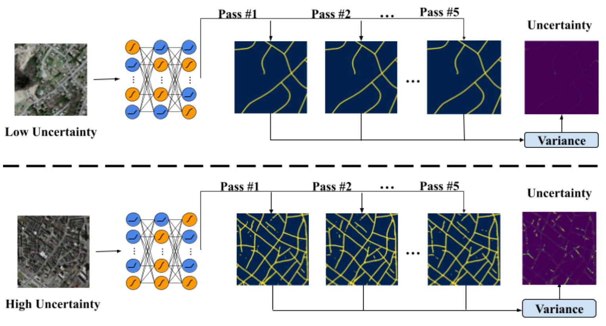

Stochastic nonlinearities
Instead of always applying the same activation function, individual network units randomly choose between two nonlinearities. Repeating inference with these different choices produces a family of predictions from one trained set of weights.
The mean gives the prediction; their variance provides an uncertainty estimate. Unlike dropping features, activation switching changes how information is transformed while keeping the feature pathways active. The same switching mechanism is used during training and inference.
We evaluate the approach on classification, segmentation and out-of-distribution detection, using convolutional networks and transformers. It needs no additional trainable uncertainty head, although collecting several predictions still requires multiple forward passes.
Explore stochastic activations